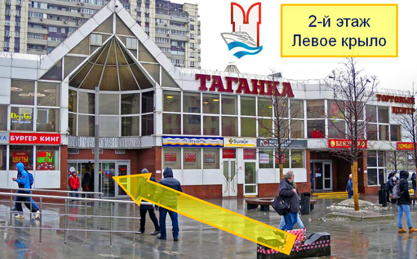

Офис на Таганской
Адрес:
г. Москва, ул. Таганская, дом 2.
ТЦ Таганка, 2-й этаж.
Метро Таганская радиальная,
Марксистская, выход №6 Часы работы: Ежедневно с 09-00 до 21-00 (без обеда) Телефон: +7 (495) 22-17-222, доб. 1401, 1402, 1403, 1248 E-mail: info@mosturflot.ru
ТЦ Таганка, 2-й этаж.
Метро Таганская радиальная,
Марксистская, выход №6 Часы работы: Ежедневно с 09-00 до 21-00 (без обеда) Телефон: +7 (495) 22-17-222, доб. 1401, 1402, 1403, 1248 E-mail: info@mosturflot.ru
